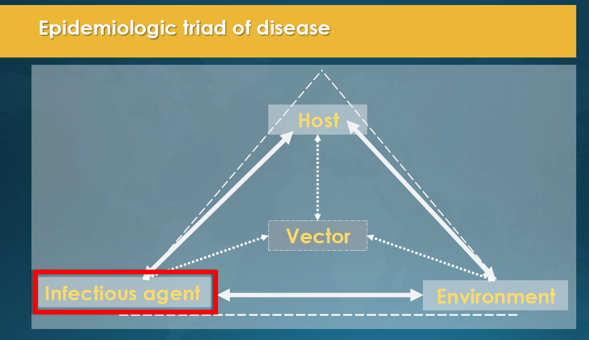
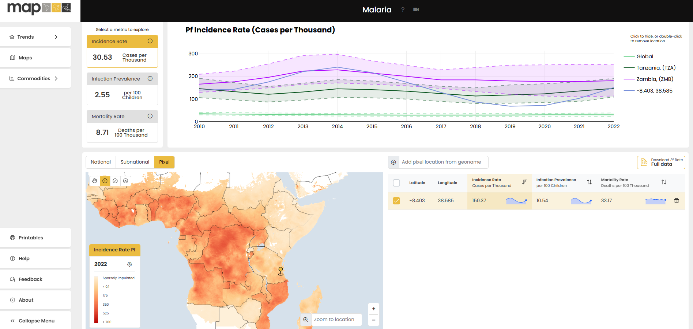

Malaria, caused by Plasmodium parasites and transmitted by female Anopheles mosquitoes, is a leading cause of morbidity and mortality, particularly in sub-Saharan Africa. Vulnerable populations, such as children under five years old and pregnant women, bear the highest disease burden. This module equips researchers, public health practitioners, and data scientists with the tools, knowledge, and data sources to better understand malaria dynamics and design targeted interventions.
Epidemiologic Triad of Malaria
Malaria epidemiology is shaped by three key components: the host, the infectious agent, and the environment.

Host Factors
Host factors significantly influence malaria risk and outcomes. These include:
Demographics: Children under five and pregnant women are the most vulnerable.
Immunity: Acquired immunity from repeated exposure reduces disease severity.
Behavior: Use of ITNs, adherence to preventive therapies, and nighttime sleeping patterns play a critical role.
Socioeconomic Status: Access to healthcare, education, and preventive measures is a key determinant.
Infectious Agent
The five species of Plasmodium that infect humans have distinct characteristics:
P. falciparum: Responsible for most malaria-related deaths, primarily in Africa.
P. vivax: Causes relapsing malaria due to dormant liver-stage hypnozoites.
P. malariae: Associated with chronic infections.
P. ovale: Rare but capable of forming hypnozoites.
P. knowlesi: A zoonotic species found in Southeast Asia.
Environmental Factors
Environmental conditions impact mosquito survival and malaria transmission:
Climate: Optimal transmission occurs in areas with temperatures between 20–30°C, high humidity, and seasonal rainfall.
Proximity to Water: Stagnant water bodies are key mosquito breeding sites.
Land Use: Urbanization and agricultural expansion modify habitats.
Data on Treatment-Seeking Behaviors
Treatment-seeking behaviors significantly influence malaria outcomes and intervention efficacy. Data on these behaviors is typically collected through household surveys such as the DHS and MICS. For children under five, surveys gather responses to key questions:
“Has (NAME) been ill with fever at any time in the last 2 weeks?”
“Did you seek advice or treatment for the illness from any source?”
“Where did you seek advice or treatment?”
Fever cases are classified based on responses, and treatment sources are categorized into:
Public Medical Care: Government hospitals, clinics, and community health workers.
Private Medical Care: Private facilities, pharmacies, and NGO-run health services.
Non-Medical Sources: Traditional healers, home remedies, or no care sought.
This data provides insights into healthcare access, equity, and the impact of interventions (Nguyen et al, 2023).
Malaria Epidemiological Metrics: Understanding, Using, and Interpreting Data
1. Prevalence and Incidence
Prevalence: Refers to the proportion of a population infected with malaria at a specific point in time. It is often used to measure the burden of malaria and the effectiveness of long-term interventions.
Example Data: Derived from Malaria Indicator Surveys (MIS) or Demographic and Health Surveys (DHS).
Use in Research: High prevalence often highlights hotspots needing intensified interventions. Temporal comparisons reveal intervention effectiveness.
Incidence: The number of new malaria cases within a specific time period, often measured per 1,000 individuals.
Example Data: Routine health system data or case reporting.
Use in Research: Identifies trends in transmission dynamics and short-term impacts of control measures.
2. Entomological Inoculation Rate (EIR)
Definition: Measures the number of infectious mosquito bites per person per year.
Interpretation: Higher EIR values indicate greater transmission intensity and can signal intervention priority areas.
Example Data: Derived from mosquito collection and testing for parasite presence.
Use in Research: A critical metric in transmission modeling and determining high-risk zones.
3. Basic Reproductive Number (R₀)
Definition: The average number of secondary infections caused by one infected individual in a fully susceptible population.
Interpretation: A higher R₀ means more intense transmission, requiring robust interventions to achieve elimination.
Use in Research: Helps assess how intensive control measures (e.g., ITNs, IRS) should be to interrupt transmission.
4. Test Positivity Rate (TPR)
Definition: The proportion of individuals tested for malaria who are found positive.
Example Data: Routine data from health facilities.
Interpretation: TPR above 5% often indicates ongoing transmission, while lower values suggest a decline.
5. Intervention Coverage Metrics
Examples:
ITN coverage: Proportion of households owning insecticide-treated nets.
IRS coverage: Percentage of households sprayed in a given area.
Use in Research: Coverage data informs the deployment and scaling of interventions and supports resource allocation.
6. Exceedance
Definition: The probability that a particular malaria metric (e.g., prevalence, incidence) exceeds a specific threshold.
Example: Probability that malaria prevalence exceeds 5% in a defined area.
Interpretation: Useful for identifying areas with a high risk of outbreaks and prioritizing interventions.
Use in Research: Supports decision-making by quantifying high-risk zones and creating predictive models for extreme values.
7. Probability Maps
Definition: Spatially explicit maps showing the probability of malaria occurrence or exceeding a specific threshold.
Example: Probability that a region has >10 malaria cases per 1,000 individuals.
Interpretation: Helps visualize areas of high uncertainty and refine intervention targeting.
Use in Research: Probability maps are widely used in spatial modeling to capture uncertainty and guide resource allocation effectively.
8. Case Fatality Rate (CFR)
Definition: The proportion of malaria cases resulting in death.
Interpretation: High CFR indicates severe disease outcomes or gaps in treatment access and quality.
Use in Research: Highlights areas needing urgent health system strengthening.
Metrics and Their Integration into Malaria Models
Malaria metrics serve as inputs for geospatial and temporal models, enabling prediction and scenario planning. For instance:
Prevalence and incidence data: Used in machine learning models to predict malaria hotspots and simulate intervention impacts.
EIR and R₀ metrics: Feed into stochastic models to estimate transmission intensity and evaluate elimination feasibility.
Exceedance probabilities: Inform planners of areas exceeding critical thresholds, such as prevalence or mortality, to prioritize resources.
Intervention coverage metrics: Critical for evaluating the return on investment in malaria programs.
Interactive Exercise
Question: Which metric best quantifies the probability of malaria exceeding a threshold in a specific area?
Conclusion: Data for Decision-Making
The Malaria Atlas Project integrates these metrics to produce high-resolution maps and guide malaria control strategies. For example:
Resource allocation: Identifying hotspots for ITN distribution or IRS campaigns.
Policy impact: Assessing how interventions affect transmission over time.
Elimination planning: Understanding where malaria can be eliminated and what resources are needed.
Explore MAP’s interactive tools and datasets to deepen your understanding of malaria epidemiology and interventions: Malaria Atlas Project.
Applications for Malaria Research
Data on malaria epidemiology and interventions is essential for generating actionable insights. The Malaria Atlas Project (MAP) integrates diverse datasets to model malaria prevalence, incidence, and mortality. Examples include:
Mapping Malaria Endemicity: Combining climate, treatment, and surveillance data to produce high-resolution prevalence maps (Bhatt et al., 2015).
Evaluating Intervention Coverage: Assessing ITN distribution, IRS coverage, and SMC uptake across endemic regions (Weiss et al., 2019).
Predicting Malaria Risk: Using environmental and behavioral covariates to forecast malaria hotspots (Snow et al., 2017).
Final Reflections
This module serves as a comprehensive resource for malaria research. By understanding the disease's biological and epidemiological characteristics, integrating diverse data sources, and leveraging advanced modelling tools, researchers can design targeted, effective interventions. Data-driven approaches empower global efforts to combat malaria, ultimately reducing its burden and saving lives.

Explore the global malaria prevelance, incidence and mortality estimates by the Malaria Atlas Project team here: https://data.malariaatlas.org/.
Interactive Quiz
Question: Which factor is most critical for predicting malaria prevalence?